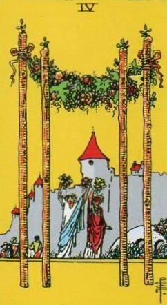
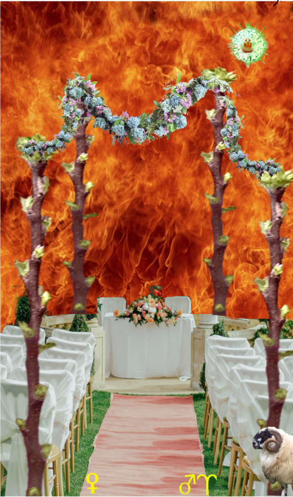
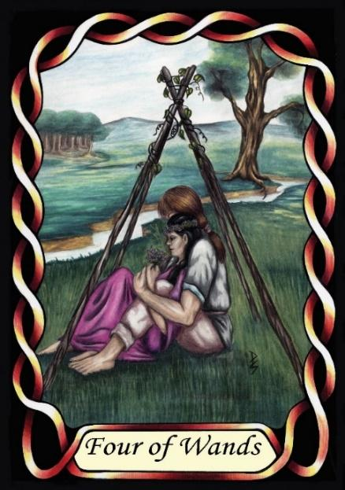

Four of Wands



Sign |
|
Oneself |
|
Sign Ruler |
|
Element |
Fire: change |
Modality |
|
Symbol |
Ram |
Decan |
|
Decan Ruler |
|
Time |
Apr 9 - 20 |
Courting Aries III
Adding Venus to Mars rulership results in pure lust. This is the later pubescent years, up to marriage. This influence also causes the strong desire for family and children normally attributed to Aries. Hormones induce a significant measure of risk-taking in males, which explains Goldschneider’s description of their pioneering nature. They are young and strong and they are leaving their parents and setting out on the adventure of the rest of their lives.
Goldschneider Personology
These Arians are more social, and socially capable than the earlier decans. They have a strong will and can be inspirational leaders. They have a natural desire to lead from the front, in circumstances requiring them to blaze a new trail. Although they are generally good with other people, their drive to push forwards can sometimes result in them overlooking the needs, desires or wishes of those who follow them. They are idealistic, and act on their ideals. They can often be seen to help the needy.
RWS Imagery
A celebration is laid out for the return of the newlywed couple returning from their honeymoon, ready to take up married life.
Summary
The Wands represents the culmination of youthful energy, as individuals transition into adulthood, driven by intensified passions and a desire for family and leadership.